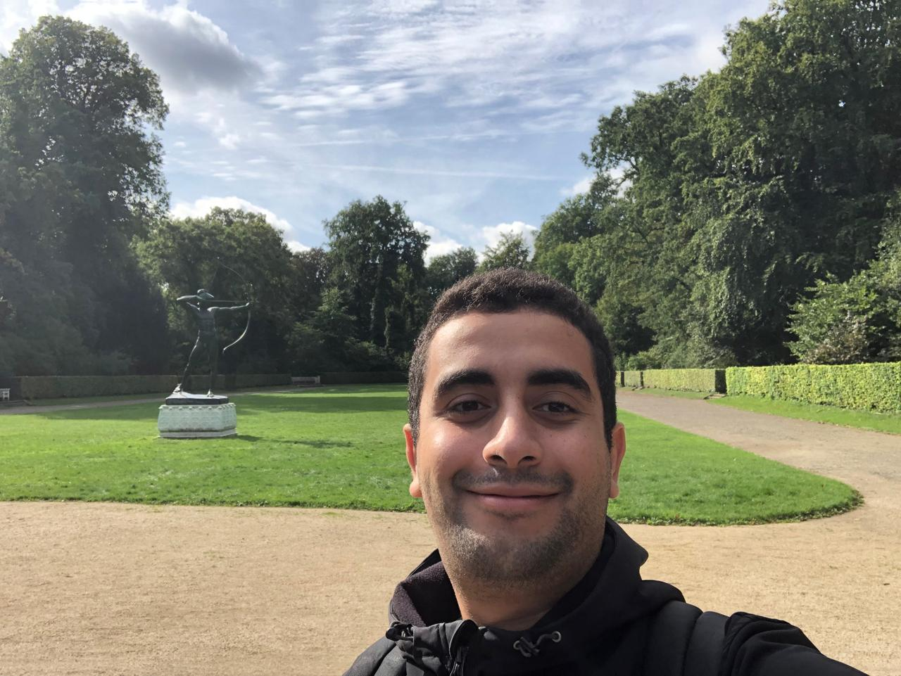

IRIT - Institut de Recherche en Informatique de Toulouse | Toulouse, France
PhD in Computer Science | AI Researcher
I am a postdoctoral researcher at IRIT - Institut de Recherche en Informatique de Toulouse in Toulouse, France. I completed my PhD in Computer Science at the University of Toulouse, defended on 24 March 2026, under the supervision of Nicholas Asher and Serge Gratton. My PhD defense committee included Jérôme Bolte, Ellie Pavlick, and Céline Hudelot.
During my PhD, I studied the limits of in-context learning and transformer generalization, trained transformers from scratch, fine-tuned models on downstream tasks, and evaluated model behavior through empirical and mathematical analysis. My research also includes model efficiency, task-aware pruning, interpretability, new attention mechanisms, and multi-agent systems.
Before my PhD, I completed the Classes Préparatoires at Lycée Mohammed VI d’Excellence in Benguerir, Morocco, and obtained an engineering degree in Computer Science from Toulouse INP-ENSEEIHT, specializing in High-Performance Computing and Big Data.
For a complete list of publications, please visit my Google Scholar profile.
"Why Transformers Struggle with Distribution-Independent In-Context Learning"
"TAPIOCA: Why Task-Aware Pruning Improves OOD Model Capability"
"Rethinking Generalization in NLP: A Kripkean Challenge to Meaning-as-Use in LLMs"
From 2023 to 2026, I delivered tutorials and practical labs to engineering and master’s students at ENSEEIHT and the University of Toulouse across mathematics, optimization, statistics, and artificial intelligence.
Continuous optimization, gradient-based methods, convexity, and numerical approaches to optimization problems.
2023–2024
Quasi-Newton methods, constrained optimization, and algorithmic implementation.
2023–2024
Probability spaces, random variables, expectation, limit theorems, and stochastic modelling foundations.
2023–2024
Estimation, hypothesis testing, regression methods, and practical data analysis.
2023–2024
Hilbert spaces, orthogonality, projections, spectral theory, and applications to PDEs and optimization.
2024–2025
Search algorithms, logic-based agents, machine learning foundations, and practical reasoning systems.
2024–2025
Mathematical series, convergence analysis, power series, and applications in modelling and numerical computation.
2024–2025
Reviewer for the NeurIPS Main Conference.
Transformers, LLMs, training from scratch, fine-tuning, in-context learning, interpretability, pruning, model efficiency, and multi-agent systems.
Optimization, numerical optimization, linear algebra, probability, statistics, and functional analysis.
Python, R, Julia, MATLAB, C, Java, Ada, OCaml, PyTorch, Hugging Face Transformers, CUDA, Weights & Biases, cluster computing, experiment pipelines, and data processing.
Toulouse, France
3 Rue Tarfaya, B612, Toulouse, France